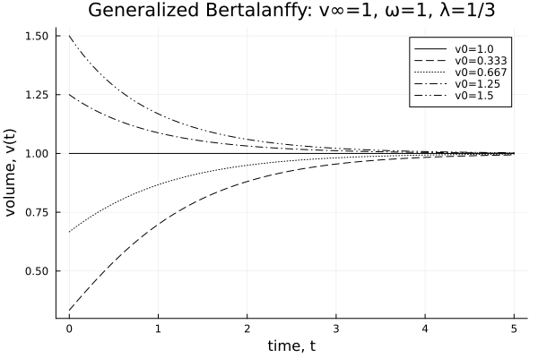
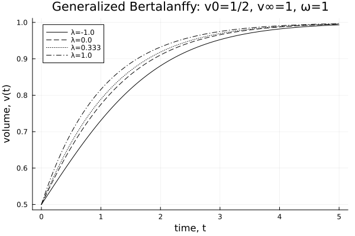

using Pkg
dir = @__DIR__
Pkg.activate(dir)
Pkg.instantiate()
import TumorGrowth.bertalanffy
using Plots
times = range(0, 5, length=200)
one = fill(1, length(times))
linestyles = [:solid :dash :dot :dashdot :dashdotdot]1×5 Matrix{Symbol}:
:solid :dash :dot :dashdot :dashdotdotGENERALIZED BERTALANFFY PLOTS: λ = 1/3 (CLASSICAL CASE)
p = (v0=1/8, v∞=1.0, ω=1.0, λ=1/3)
v0s = [1, 1/3, 2/3, 5/4, 3/2]
series = Array{Float64}(undef, length(times), 5)
for (i, v0) in enumerate(v0s)
series[:,i] = bertalanffy(times, merge(p, (; v0)))
end
labels = map(v0s) do v0
r = round(v0, sigdigits=3)
" v0=$r"
end |> permutedims
plot(
times,
series;
linecolor=:black,
xlab = "time, t",
ylab = "volume, v(t)",
labels,
linestyles,
title="Generalized Bertalanffy: v∞=1, ω=1, λ=1/3"
)
savefig(joinpath(dir, "bertalanffy_varying_v0.png"))
gui()
GENERALIZED BERTALANFFY PLOTS: V₀=1/3
p = (v0=1/2, v∞=1.0, ω=1.0, λ=1/3)
λs = [-1, 0, 1/3, 1]
series = Array{Float64}(undef, length(times), 4)
for (i, λ) in enumerate(λs)
series[:,i] = bertalanffy(times, merge(p, (; λ)))
end
labels = map(λs) do λ
r = round(λ, sigdigits=3)
"λ=$r"
end |> permutedims
plot(
times,
series;
linecolor=:black,
xlab = "time, t",
ylab = "volume, v(t)",
labels,
linestyles,
title="Generalized Bertalanffy: v0=1/2, v∞=1, ω=1"
)
savefig(joinpath(dir, "bertalanffy_varying_lambda.png"))
gui()
This page was generated using Literate.jl.